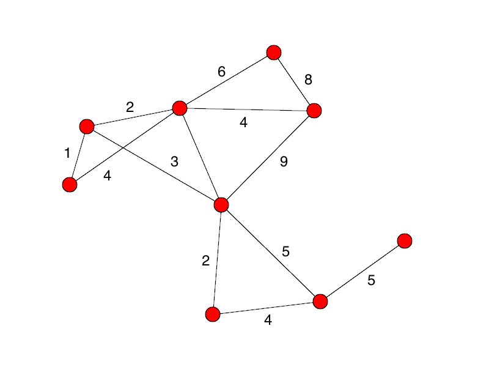
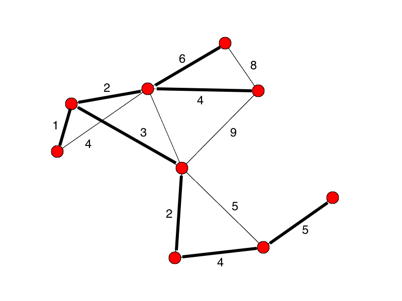
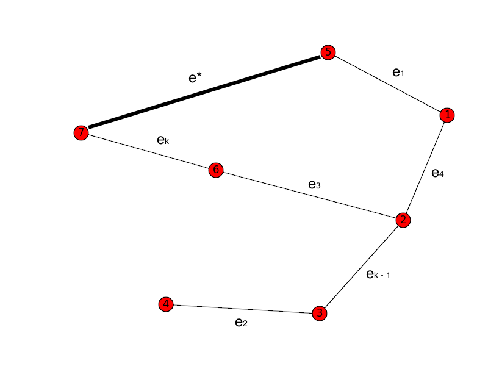

Tree: A connected graph with no cycles.
Given a graph G, any tree that includes all of the vertices
of G is called a spanning tree. The lowest-weight tree
that does that is a minimum spanning tree.
These are used to solve problems such as:
This problem can be solved using a greedy algorithm.
It runs on a weighted graph. (On an unweighted graph, all
spanning trees are minimal: tree property E = V - 1.)
Generic-MST(G, w)
A = ∅
while A does not form a spanning tree
fine an edge (u, v) that is
safe for A
A =
A ∪ {(u, v)}
return A
Loop invariants:
How do we find a safe edge?
One must exist, since we are working with a connected graph,
and A is at all times a part of an MST.
Definition:
a cut (S, V - S) of an
undirected graph G = (V, E) is a
partition of V.
Definition:
an edge (u, v) crosses the cut (S,
V - S) if one of its
endpoints is in S and the other in V.
Definition:
a cut respects a set A of edges
if no edge in A crosses
the cut.
Definition:
An edge is a light edge crossing a cut if its weight is
minimum among all edges crossing the cut. Uniqueness is not
required.

We add edges in increasing-cost order, so long as the edges
don't create a cycle (are "safe").
Steps:

Proof: Is Kruskal's algorithm guaranteed to always
find the minimum spanning tree?
Yes, it is. Let's prove it.
We suppose that graph G has n vertices.
Then our algorithm will create a tree T
with edges e1, e2,
... en - 1, where
w(e1) ≤ w(e2)
≤ ... w(en - 1).
Suppose that there is a tree T* with a lesser
weight.
Let ek be the first edge in T
that is not in T*.
Now we insert ek in T*. This will
produce a cycle in T*, by the nature of trees.
There must be some edge e* that is in
T* but not in T (otherwise T would
have a cycle).

But the weight of ek must be less than
the weight of e*, because after we had
inserted e1 through
ek - 1, we could have next chosen
e*... but we did not. Instead we chose
ek.
So T* does not have a lesser weight after all.
The big difference from Kruskal: in Kruskal, we have a set of
edges, perhaps with no connections, that eventually
turns into a tree.
With Prim, we continually have an ever-growing tree. In fact,
it is always an MST of a sub-graph of our graph.